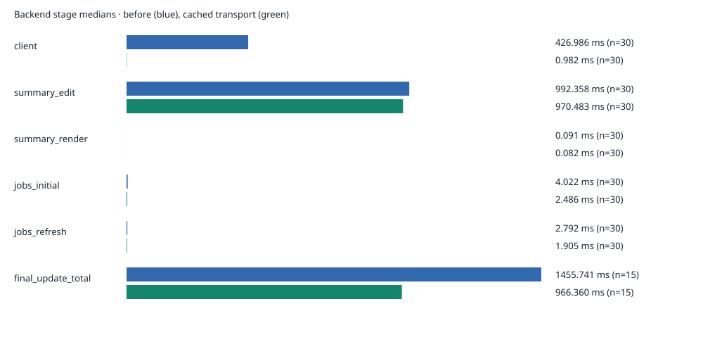
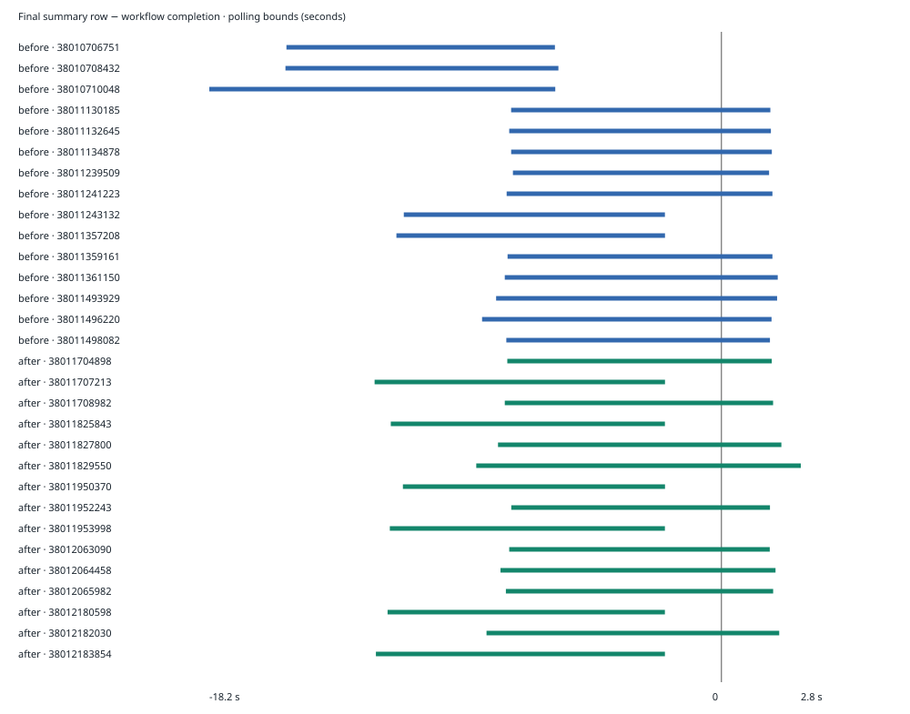

Digger comment latency
Local backend + real GitHub Actions · existing test PR 21 · 2026-10-10 · no PR created
What the runs establish
0 confirmed delayed rows; 0 observed reversions. Overlapping polling bounds cannot rule out a short delay. This is API-visible summary-row timing, not browser refresh latency.
Standard three-project fixture measured. Small/heavy management-policy scenarios remain blocked on an EE test license.
| Phase | Usable batches | Usable workflows | All recorded outcomes |
|---|
| before | 5 | 15 | already_final: 5, initial_match_unverified: 3, overlapping_bounds: 10 |
| after | 5 | 15 | overlapping_bounds: 9, already_final: 6 |
Three late baseline observations are retained and excluded from stage/delay comparisons. Each batch contains three related workflows; these are not independent samples.
Before / after: backend milliseconds
The candidate reuses GitHub installation transports and their synchronized token cache. First acquisition still needs GitHub; subsequent comment updates reuse it. GitHub edit latency remains.

| Stage | Before median | After median | Change | Before range | After range |
|---|
| client | 426.986 | 0.982 | -99.8% | 284.136–761.269 | 0.240–13.130 |
| summary_edit | 992.358 | 970.483 | -2.2% | 799.644–1320.479 | 773.534–1530.987 |
| summary_render | 0.091 | 0.082 | -9.8% | 0.027–0.232 | 0.032–0.187 |
| jobs_initial | 4.022 | 2.486 | -38.2% | 0.921–9.448 | 0.938–8.999 |
| jobs_refresh | 2.792 | 1.905 | -31.8% | 0.949–7.738 | 0.914–3.162 |
| final_update_total | 1455.741 | 966.360 | -33.6% | 1092.322–1896.541 | 779.056–1322.180 |
Inclusive stage durations overlap. Do not sum them or interpret them as exclusive critical-path time. Final update total uses only succeeded/failed job updates. Component timings include both running and final updates because batch-only correlation cannot safely separate overlapping child spans. Observed timing-event errors: 0. Serial exploratory batches, not randomized trials or reliable tail estimates; overlapping batches and browser refresh were not tested. Some baseline runs overlapped local compilation/race checks; network and host variability remain possible confounders.
Workflow completion versus final row
Entire interval left of zero: row confirmed final before workflow completion. An interval crossing zero is inconclusive. Poll interval is two seconds plus API request time, with ten seconds of final-state observation.

Scope and correctness
The CLI summary provider returns NoopCommentUpdater. Its synthetic renderer improvement is inactive in this live path and is not a cause of these results. Backend asynchronous updates remain unsynchronized; this cache does not fix ordering races.
Cache tests and race checks cover concurrent reuse, App/install/key isolation, expiry and HTTP 401 invalidation. Sixteen observer/report tests pass. Cache entries live until invalidation or process exit; there is no size bound.
Fixture: 929d9580; workflow: d952ef95; CLI: c1962300 in both phases. Backend before: c1962300; after: 6de55a67. Plans only; later batches use signed local replay of the existing PR event. Before CLI reverses the inactive renderer patch; after retains it.
Summary data · Timing table · Before stage records · After stage records · Runbook · Findings · Local startup recording · Health and report recording